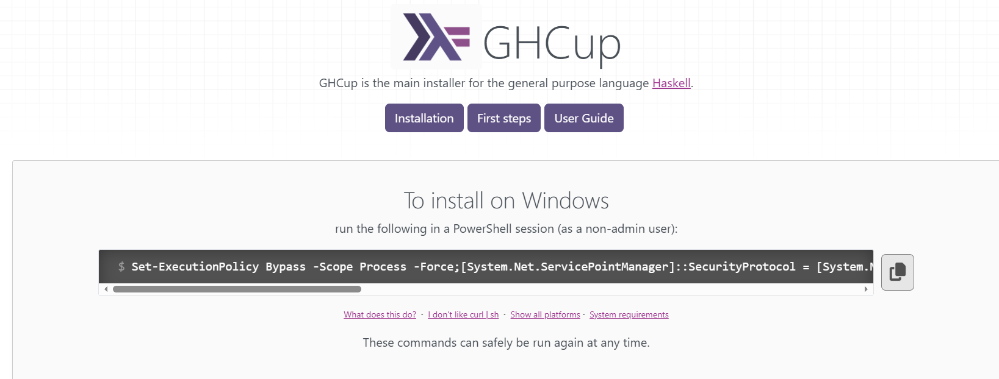
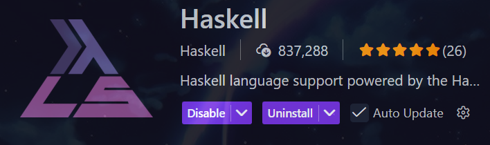
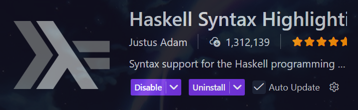
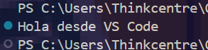
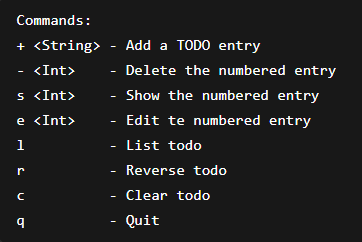

+++ date = '2026-02-16T18:07:38-08:00' draft = false title = 'Practica_3' +++
En el presente documento se describe el proceso de instalación y configuración del entorno de desarrollo necesario para trabajar con el lenguaje de programación Haskell utilizando el editor Visual Studio Code, así como una breve explicación de sus fundamentos.
Haskell es un lenguaje de programación de paradigma funcional que se caracteriza por ofrecer un nivel de abstracción más alto en comparación con lenguajes tradicionales como C, C++, Python o Java. A diferencia de estos, que siguen un enfoque imperativo, Haskell adopta un estilo declarativo en el que el programador se enfoca en describir qué resultado desea obtener. Caracterisado principalmente por su pureza funcional, donde las funciones no generan efectos secundarios, su sistema de tipado estático fuerte, que permite detectar errores antes de la ejecución y el uso de la evaluación perezosa, lo que optimiza el uso de recursos al ejecutar solo lo necesario.
Gracias a estas cualidades, Haskell es un lenguaje potente y preciso, utilizado principalmente en entornos académicos y en el desarrollo de software donde se requiere alta confiabilidad. En este documento se mostrará cómo preparar el entorno y ejecutar una aplicación básica para comprender su funcionamiento.
Haskell es un lenguaje de programación puramente funcional que fue desarrollado en los años 80 y 90. Se basa en el cálculo lambda y es conocido por su semántica no estricta y su tipado fuerte. Haskell promueve la inmutabilidad de los datos, lo que significa que una vez que se asigna un valor a una variable, este valor no puede ser modificado, lo que facilita la creación de programas más seguros y predecibles. Además, Haskell es ampliamente utilizado en campos como la inteligencia artificial, la bioinformática y las finanzas, lo que lo convierte en un lenguaje muy potente y flexible.
Con su publicación, Haskell se convirtió prácticamente en el estándar de los lenguajes de programación funcionales. Más tarde, se desarrollaron numerosos derivados como Parallel Haskell, Eager Haskell, Haskell++ o Eden, que están estrechamente alineados con Haskell. Algunos de los lenguajes de programación más modernos también se basan en Haskell. Por ejemplo, el lenguaje universal Python, uno de los lenguajes de programación de internet más importantes, ha adoptado la notación lambda y la sintaxis de procesamiento de listas de Haskell.
Para instalar Haskell, primero es necesario descargar GHCup, que es la herramienta oficial encargada de instalar todo el entorno de desarrollo necesario.
Para ello, se debe ingresar a la página oficial de GHCup: https://www.haskell.org/ghcup/
Ahí se muestra la documentación junto con el comando de instalación. Este comando se debe copiar y pegar en una ventana de PowerShell (es importante no abrirla como administrador).
Una vez ejecutado el comando, comenzará el proceso de instalación. Durante este proceso, GHCup descargará e instalará automáticamente herramientas importantes como el compilador (GHC), el gestor de paquetes (Stack), entre otros componentes necesarios. Es posible que el proceso tarde algunos minutos dependiendo de la velocidad de internet y del equipo.

Para verificar que la instalación se realizó correctamente, se pueden ejecutar los siguientes comandos en la terminal de PowerShell:
ghc --version
o en su defecto
stack --version
Si al ejecutar cualquiera de estos comandos aparece la versión instalada, significa que el entorno se instaló correctamente y está listo para usarse.
Una vez instalado todo el entorno, el siguiente paso es configurar el editor de código Visual Studio Code para poder desarrollar y ejecutar programas en Haskell de forma más cómoda.
Para ello, se deben instalar las extensiones oficiales de Haskell dentro de VS Code. Esto se hace entrando a la sección de extensiones del editor y buscando “Haskell”. Las extensiones principales permiten tener autocompletado, resaltado de sintaxis, detección de errores y mejor integración con el lenguaje.
!


Estas extensiones facilitan mucho el desarrollo, ya que ayudan a escribir código más rápido, detectar errores en tiempo real y ejecutar programas directamente desde el editor.
Una ves descargadas las extenciones de Hazkell podemos empezar a realizar nuestro primer programa en hakell sencillo, el clasico hola mundo.
-- Programa sencillo en Haskell
main :: IO ()
main = do
putStrLn "Hola mundo"

En este ejemplo para imprimir el clasico texto "Hola mundo" consta de varios elementos:
main: es la función principal (por donde empieza el programa).
IO: significa que el programa va a interactuar con el usuario (entrada/salida).
( ): indica que no devuelve un valor importante, solo ejecuta acciones.
do: se usa cuando vas a ejecutar varias acciones en orden, en este caso solo va a imprimir texto.
putStrLn: es una función que imprime texto en la pantalla.
"Hola mundo": es el mensaje que se va a mostrar y al igual que la mayoria de los lenguajes de programacion, los texto que se van a mostrar en pantalla se colocan entre comillas dobles.
A continuacion se muestra otro ejemplo mucho mas elaborado el cual es un blog echo con Haskell èl cual se encuentra en un repositorio en GitHub (https://github.com/steadylearner/Haskell/tree/main/examples/blog/todo):
-- https://www.fpcomplete.com/haskell/tutorial/stack-script/
-- #!/usr/local/bin/env stack
-- stack --resolver lts-12.21 script
module Main where
import Configuration.Dotenv (defaultConfig, loadFile)
import Lib (prompt)
import System.Environment (lookupEnv)
import Web.Browser (openBrowser)
-- $stack run
-- $stack build
-- $stack install
-- $stack install --local-bin-path <dir>
-- $stack install --local-bin-path .
-- $./text-exe
-- $stack Main.hs
-- $chmod +x Main.hs
-- $./Main.hs
-- Should include .env and open browser.
main :: IO ()
main = do
loadFile defaultConfig
website <- lookupEnv "WEBSITE"
case website of
Nothing -> error "You should set WEBSITE at .env file."
Just s -> do
result <- openBrowser s
if result
then print ("Could open " ++ s)
else print ("Couldn't open " ++ s)
putStrLn "Commands:"
putStrLn "+ <String> - Add a TODO entry"
putStrLn "- <Int> - Delete the numbered entry"
putStrLn "s <Int> - Show the numbered entry"
putStrLn "e <Int> - Edit te numbered entry"
putStrLn "l - List todo"
putStrLn "r - Reverse todo"
putStrLn "c - Clear todo"
putStrLn "q - Quit"
prompt [] -- Start with the empty todo list.
-- putStrLn "Commands:"
-- putStrLn "+ <String> - Add a TODO entry"
-- putStrLn "- <Int> - Delete the numbered entry"
-- putStrLn "s <Int> - Show the numbered entry"
-- putStrLn "e <Int> - Edit te numbered entry"
-- putStrLn "l - List todo"
-- putStrLn "r - Reverse todo"
-- putStrLn "c - Clear todo"
-- putStrLn "q - Quit"
-- prompt [] -- Start with the empty todo list.

Esta aplicación ya es una TODO real, o sea, sirve para gestionar tareas desde la terminal.
Permite cosas como:****
Además, al iniciar intenta abrir un navegador con una página web que tú defines en un archivo .env.
Se puede ejecutar con Stack de varias formas:
stack run
o directamente como script:
stack main.hs
Normalmente se hace así:
stack new todo-app
cd todo-app
stack build
stack run
este comando crea un stack y ingresa en ella, después reemplazas el contenido de Main.hs con este código
import Configuration.Dotenv
import Lib
import System.Environment
import Web.Browser
importa todo lo necesario para:
main :: IO ()
main = do
Inicia el programa, desde aqui empieza toda la ejecucion de el programa y se define todo el proceso necesario
loadFile defaultConfig
carga archivos .env el cual contiene variables como "WEBSITE=google.com"
website <- lookupEnv "WEBSITE"
obtiene la variable WEBSITE para usar una URL guardada
case website of
Nothing -> error "You should set WEBSITE..."
si no existe marca error junto con un mensaje indicando el error
Just s -> do
si si existe, continua con el proceso
result <- openBrowser s
if result
then print ("Could open " ++ s)
else print ("Couldn't open " ++ s)
intenta abrir la pagina web y muestra si funciono o no
putStrLn "Commands:"
Muetra todas las funciones disponibles que el programa puede realizar (agregar, eliminar, listar, salir)
prompt []
Por ultimo se inicializa la lista como una lista vacia, la funcio prompt es la que maneja todas las operaciones del sistema